Overview
This article provides a partial analysis on the accuracy of SIMION's space-charge (charge repulsion) estimation methods and identifies conditions under which it is suitable. We briefly describe the methods and compare the results against theory as well as against quantitative CPO results.
Introduction
SIMION supports a few charge repulsion calculation methods that aim in providing a quick and rough estimate of space-charge effects in a system, or at least at the onset of space-charge before space-charge effects become too significant. These methods have been shown to be useful in a number of circumstances (see [Dahl 2000] and [Appelhans 2005]) but are not guaranteed to be that quantitative and in fact can be quite questionable or inapplicable under some conditions such as near a thermionic emitter surface (typically high field, low particle energy, high space-charge regions). The SIMION methods are based merely on Coulombic repulsion between the charged particles in flight, which is achieved by either of two variant methods: between the particles represented as point charges or clouds (in the "Coulombic" method or the essentially identical "factor" method) or between the particles represented as narrow charged beam lines (in the "beam" method). For a given charged particle, the force on it due to the Coulombic repulsion from the other charged particles and the force on it due to the electric fields from the surrounding electrodes are simply superimposed. For the most part, SIMION does not take into account the additional effect that the space-charges and the electrode surfaces charges have on relocating each other, both of which are mobile. For example, it does not account for any alteration of the surface charge distribution on the electrodes due to the space charge (i.e. Poisson equation), nor the subsequent effect those rearrangements have on the space-charge. Further, at least in the case of "beam" repulsion where ions are flown by space-coherent integration, it does not take into account the electric field forces from the space-charge in front of or behind the current particle locations on the current particles (though you can simulate that effect using Coulombic repulsion with ions at different times of births to give a good representation of particles along the entire beam length). Even if those issues were addressed in the low kinetic energy (e.g. emission) regions, an additional consideration, as noted by [Dahl 2000], is that accurate modeling of space charge effects in those regions is very dependent on using truly representative collections of simulation ions and on accurate field determinations in those regions--i.e. using sufficient grid density in those regions and giving appropriate care to particle initial conditions. Note also that space-charge effects can become more significant in the presence of collision models ([Appelhans 2005]), which tend to reduce charged particle energies, even down to thermal energies.
SIMION provides two main charge repulsion estimation methods. The "Coulombic" and "factor" methods are essentially the same method but differ only in how the repulsion factor is expressed, while the "beam" method is different and more specialized. The Coulombic repulsion assumes simply that the particles are point charges, or actually charge clouds surrounding points. It is useful when your space-charge acts like distinct particles or bunches, such as in an ICR cell or ion-trap, rather than a continuous beam of current. The beam repulsion method in contrast can be preferable for continuous beams of current. However, the beam repulsion method will only function if the particles can be flown by "space-coherent integration" (see p.H.18 "Charge Repulsion Forces: Beam Repulsion" in the SIMION 8.0 manual). That is, the first particle is assumed to be the "leader of the pack," and all other particles are integrated in the plane normal to the first particle's velocity. If those conditions are not met on an ion, SIMION will kill the ion ("ion killed" event). So, for example, a very chaotic beam, such as in a high pressure collision model, even if thin and continuous, cannot use the beam method (e.g. in [Appelhans 2005] the atmospheric pressure IMS model applies the Coulombic method).
For further discussion on SIMION's methods see 8.5.2 "Ion Beam Repulsion" and H.18 "Charge Repulsion Forces", as well as 2.2.6 "Poisson's Equation Allows Space Charge" in the SIMION 8.0 manual. There is addition discussion in the [Dahl 2000]. Also, [Appelhans 2005] provides a much more detailed discussion relating to space-charge in a high pressure collision model.
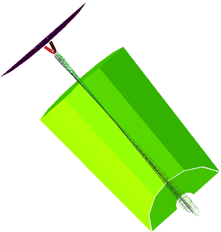
The CPO software (www.simion.com/cpo) is another charged particle optics simulation software package, somewhat like SIMION but positioned for the higher-end user, which has particular emphasis on providing space-charge handling that is quantitative and well tested against theory for a number of situations (space-charge is one of the main benefits, the other being providing certain high accuracy calculations in terms of surface charge). In CPO's approach, space-charge trajectories and electric fields are allowed to be mutually dependent. In fact, a high space-charge in an ion beam is allowed to re-arrange the surface charges on the electrodes, thereby altering the fields, which in turn alter the trajectory paths, ad infinitum. Therefore, fields and trajectories in CPO are solved alternately in iteration until a mutual convergence is reached through a method called "particle in cell (PIC)" or by its own often more accurate "tube method" [Read 1999]. (The tube method is restricted to narrow-ish beams, a bit like SIMION's beam method is.) This works very well for continuous beams in static fields, or even pulsed beams whose pulse duration is long enough that the beam transit time exceeds the beam length so that it is continuous to an approximation, though it is not in general, due to the convergence requirement, intended for modeling space-charge effects inside very pulsed beams or time-dependent fields, which are more complicated problems.
The second major aspect of CPO's space-charge handling is that CPO also provides specialized handling at the cathode emission region, which is where SIMION's charge repulsion estimation methods aren't claimed to be valid. Now, there are a few important points here concerning the emission surface. First, the particles emitted from the surface are often at low (e.g. thermal) energy and not yet accelerated. When particles move at low energy they have more time to to be affected by other charged particles and so space-charge effects become more significant. This leads to the second point that sufficient space-charge at the cathode will eventually lead to Child's Law effects (see [Wikipedia]) that limit the maximum emission current. Qualitatively, this means that if the current becomes sufficiently high, the space-charge at the cathode region will increase to such a level to repell any increase in emission current, thereby providing a feedback that limits the maximum current; in fact, the field at the cathode surface becomes zero. Child's Law is explicitly written as jmax = ((4/9)ε0sqrt(2e/m)) V03/2 / d2. Here, jmax is the maximum space-charge limited current, e/m is the charge-to-mass ratio of the particles, V0 is the voltage drop between anode and cathode, and d is the distance between anode and cathode. For electron particles, ((4/9)ε0sqrt(2e/m)) = 2.3340µA/mm2. Child's Law applies precisely only to a region that resembles a planar diode (parallel cathode and anode plates facing each other). Obviously, many systems as a whole don't resemble a planar diode, but if one zooms in sufficiently close to a cathode surface, that the surface and equipotentials near it appear planar, then Child's Law can be applied by taking the anode to be one of the equipotentials. The third point about emission surfaces is that accuracy of fields in this region can be critical to the result. For example, the Child's Law effect is fairly sensitive to the voltages surrounding the emitter. Accurate field calculations are critical to other types of emitters as well, especially field emission cathodes, though space charge is often less significant there. Therefore, there is a need here for CPO's iterative approach in computing the coupling between space charge and surface charge, as well as sufficient grid density in the often small cathode region for accurate potential and field determination. CPO's BEM methods (which are quite different from the FDM and FEM methods of other computational codes) make it relatively easy to model the critical cathode at higher resolution than the surrounding volume since electrodes are defined by free-form triangulated surface meshes (not even needing a volume mesh as in FEM). CPO finely divides not only this critical cathode but also a small volume region around the cathode with a series of shells. These shells provide not just accuracy but simulate the Child's Law effects of space-charge limiting current. This is best seen in some of CPO's cathode emission examples, such as the Pierce gun and space charge limited diodes. As a final note, these capabilities may be expanded or limitations removed since the time of this writing, and the latest information is on www.simion.com and www.simion.com/cpo.
It can be instructive now to analyze some SIMION's results and also compare them against some the quantitative calculations in CPO. This is done in the following sections for a variety of simulations.
Isolated Beam
The CPO examples "xmpl3d07" and "xmpl2d11" demonstrate the space-charge repulsion in an isolated beam that's initially focused on a point:
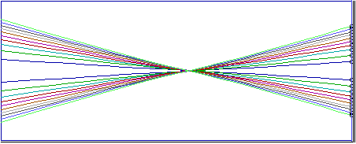
(A)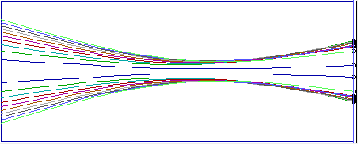
(B)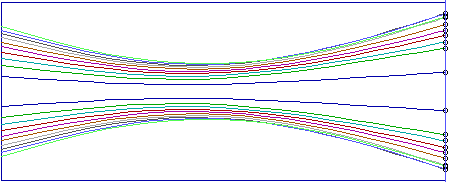
(C) R1=1.24, R2=3.53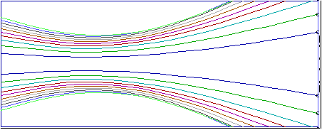
(D)As we increase the beam current (see A-D in Figure above), the beam increasingly diverges. There is a maximum current x (shown in C) at which the minimum beam radius remains on the original focus point, and we refer to this as the maximum current sustained by the beam. Parts A-D in the above figure show 0.1x, 0.5x, 1x, and 2x current respectively.
As noted in the CPO documentation, there is a theoretical approximation (though somewhat contrived with assumptions that cannot be met entirely in practice) for the maximum current supported by the beam, which is about (38.6µA)*(KE1.5)*(tan θ)2 for initial energy KE and beam half angle θ, and the minimum beam radius is 1/2.35 that of the initial beam radius. For a beam with KE of 1eV, initial radius 3 mm, and tan(θ)=0.3, the maximum current will therefore be 3.47 µA and the minimum beam radius 1.28 mm, both of which are quite consistent with the CPO results using the "tube" method above.
The corresponding SIMION example simulation is "repulsion1.iob", which uses "beam" repulsion or "Coulombic" repulsion. If beam repulsion is used, set the repulsion factor to 3.47E-6 A as derived above. If Coulombic repulsion is used, optionally load the "repulsion1-coulomic.fly2" particles (which have a larger number, 1000, of particles) and set the repulsion factor to "3.47E-13 C" (which is the summed absolute value of all the charged particles, that is the beam current 3.47E-6 A times the beam duration 0.1E-6 seconds). For Coulombic repulsion, we achieve a non-zero beam duration by applying a uniformly random distribution (0 to 0.1 µsec) on the time of birth in the particle definitions. You can see this by examining the particle definitions. When using Coulombic repulsion, the beam duration should be at least some small multiple of the time-of-flight so that particles are represented along the full length of the beam. Further the number of particles should be sufficiently high (or the beam duration sufficiently low) so that the density of particles in the beam sufficiently fills the beam volume. This is easy to verify by viewing the particles as Dots, rather than Lines, in SIMION as shown below. Here, the time of flight is about 0.03µsec. We use 1000 total particles over 0.1 µsecond beam duration, which allows just over three total transit times, each with about 300 particles.
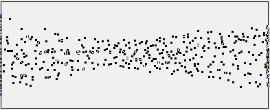
The below screenshots show this system for various simulations in SIMION, under both Coulombic and beam repulsion methods for 0.1x, 0.5x, 1x, and 2x maximum current.
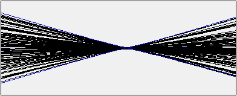
Beam, 0.1x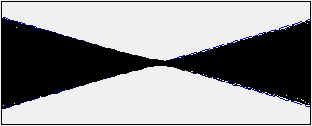
Coulombic, 0.1x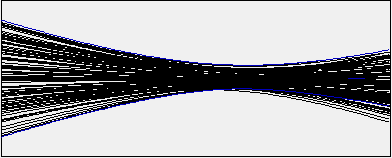
Beam, 0.5x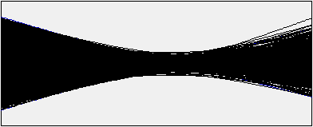
Coulombic, 0.5x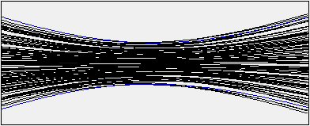
Beam, 1x: R1=1.48, R2=3.37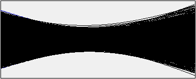
Coulombic, 1x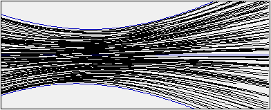
Beam, 2x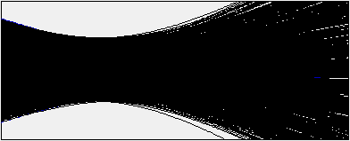
Coulombic, 2xAs seen, the SIMION results are surprisingly consistent with CPO (and with each other), but maybe we should not be too surprised. After all, this is an isolated beam with no electrodes used (at least in the SIMION simulation, as the CPO simulation did have ground electrodes placed on both ends), which implies no external fields, so there's no potential for coupling between the fields and trajectories that SIMION is not taking into account, and it's not a thermal emitter. Still, adding a voltage difference across the beam continues to give fairly similar results at least provided the current is not taken too high. Note that the Coulombic repulsion method generally requires more rays to obtain good results, and there are some stray rays, but the bulk of the beam largely matches the results in the beam repulsion here.
Further analysis is provided in repulsion2.iob. (NOTE: repulsion2.iob uses experimental SIMION 8.1 features and will be included in SIMION 8.1, but it it available for preview to 8.0 users prior to the 8.1 release.) Again, use Coulombic repulsion with factor 3.47E-13 C, but also load and enable drawing of contours in repulsion2.con. This is the same simulation but with a different user program that plots contours of the component of potential as due to space charge.
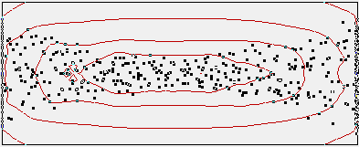
(A)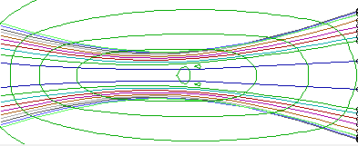
(B)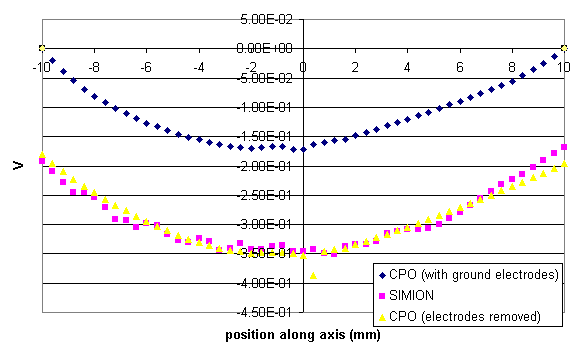
In the original CPO simulation, there are ground plates on either side of the beam. This forces the potential to be ground at -10 mm and 10 mm along axis despite the space-charge at this location. SIMION does not take into account the interaction between the space-charge and electrodes. Interestingly, that only shifts the overall potential and doesn't affect the fields and trajectories much (which are the negative gradient of potential). However, if we move the electrodes far away, then the SIMION and CPO results are quite similar even in potential.
Mixed Beam
A slight variation on the above is to simulate a mixed beam of equal numbers of positive ions and negative electrons traveling at the same velocity. The charges negate each other so that the net space-charge should be zero throughout the system, eliminating any beam repulsion.
The SIMION example used "repulsion1.iob" with beam or Coulombic repulsion. With beam repulsion, use repulsion1_mixed_beam.fly2 and repulsion factor "6.94E-6 A" (twice the previous number for equally splitting between the positive and negative beams). For Coulombic repulsion, use repulsion1_mixed_coulombic.fly2 (which has 1000 total particles) with repulsion factor 6.94E-13 C (again, twice the previous value).
The SIMION (beam and Coulombic repulsion) and CPO-2D (tube method) results are shown below.
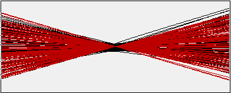
SIMION Beam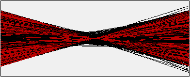
SIMION Coulombic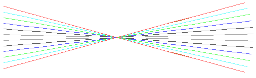
CPOThe results are quite similar and show little if any repulsion, though we used randomized particle starting points in SIMION (unlike in the CPO simulation), so that space-charge is not entirely canceled unless an infinite number of particles is used. We could use non-randomized particle starting points in the SIMION simulation to largely eliminate the difference, but its presented as is for its pedagogical value. SIMION's Coloumbic method has a few more stray rays than the beam method too.
Pierce Gun
A situation where CPO space charge handling is more necessary, as noted previously, is in an emission surface with low energy particles and high space charge (e.g. a thermionic emitter). A simple but good example is the Pierce gun. These are the test2d12.dat and test2d20.dat examples in CPO. The planar Pierce gun example with very low current (i.e. no space-charge effects) is shown below-left with equipotential lines:
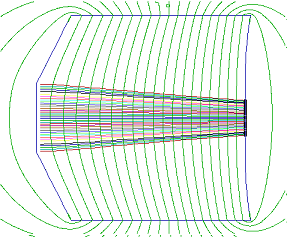
(A)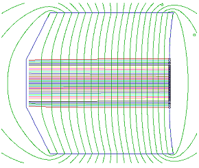
(B)As current is increased, it approaches a maximum current (by Child's Law) so that the cathode does not emit more than the maximum current. Furthermore, at this limit the particles beam repels and causes the trajectories to be essentially parallel (right).
Notice that the beams are now quite parallel as expected. Notice also that the beam has perturbed the electric field as seen by the now fairly parallel equipotential potential lines. It's instructive to look at a plot of space-charge intensity:
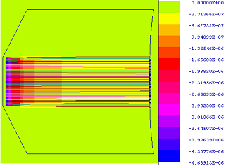
This confirms the expectation that the space-charge is by far the most significant at the critical cathode emission surface.
Also, as noted, we expect the space-charge limited current to be 0.73808 µA/mm2 by Child's Law, or 1.4762 µA per linear mm in the y direction. We obtain 1.4843 µamp in CPO, giving an error of 0.5%, with a total computing time of much less than a minute (this is only a rough calculation that can be run at higher accuracy).
Corresponding SIMION results are shown next. For the SIMION beam repulsion, we use pierce.iob with beam or Coloumbic repulsion. For beam repulsion we use 1.1808E-5 A for the repulsion factor. This is because according to Child's Law, we expect 0.73808 µA/mm2 maximum space-charged limited current, and the beam in the SIMION example is 16 mm2, which when multiplied together gives the total current. For the SIMION Colombic repulsion, we use pierce_coulomb.fly2 (which uses more particles) and 2.3619E-13C (that is (0.73808E-6 A/mm2)*(16 mm2) * (0.02E-6 sec)).
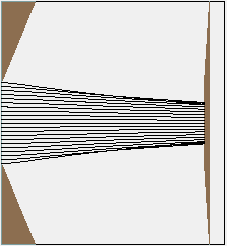
Beam,no current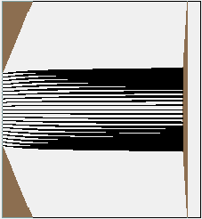
Beam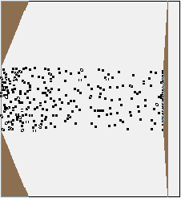
Coloumb (dots)The SIMION results are actually fairly good here. Notice the dot view shows that the particles are quire representative of the beam for Colombic repulsion.
The user program attached to this workbench shows that the component of potential due to space-charge is only about -0.5V along the beam (compared to the 10V potential difference between cathode and anode). The cathode an anode are both fairly planar and facing each other, resembling a planar diode, so Child's Law applies across then entire 10V drop. Therefore, we can plug 10V +- 0.5V into Child's Law to obtain the space-charge limited current in this system fairly reliably, and we use this current in the SIMION simulation.
However, an important distinction here is that the maximum current is being entering into the SIMION simulation, assuming we know what it is. In the CPO simulation, the maximum current was determined by CPO. In this particular simulation, the maximum current is known theoretically by a fairly direct application of Child's Law since the cathode and anode are planar electrodes facing each other. In the more general case, however, Child's law may help in approximating it, but this is not so simple and reliable because the fields and trajectories are coupled. We might obtain an order of magnitude estimation of maximum current from when the SIMION trajectories appear to widely diverge at the cathode. Some of these approaches will be explored later on, but CPO's iterative methods provide a more sure answer here in the general case.
Below the SIMION simulation is run at 10x current for comparison (as well as higher currents). This is not even realistic since it violates Child's Law, which shows that some caution is needed in analyzing such results, particularly at high space-charge. (CPO reports an error here, indicating that cathode current is repulsive.)
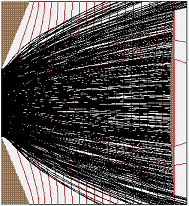
Coloumb, 10x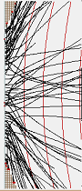
Coloumb, 70x, NOTE: particles moving backward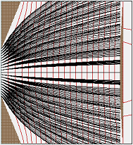
Beam, 10x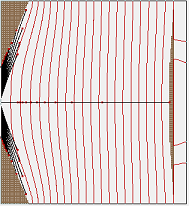
Beam, 10000xIn Coulomb 70x current, it should be obvious that the trajectories are wildly diverging at the emitter surface, so its likely that the results are not realistic and/or we are above the maximum space-charge limited current.
In beam 10000x current, the repulsion is obviously causing non-realistic results; however, it may require this higher current to realize this since the beam repulsion method does not take into account charges behind and in front of the current particles (as was done with the Coulomb repulsion by using a randomized TOB). It is the particles in front of the current particles that limit the current.
A few additional comments can be made. Using fewer particles (50) in Coloumb repulsion still works reasonably well:
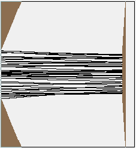
Coloumb, 50 particlesAt half maximum current (0.5x), SIMION results give a beam half width 1.56 mm v.s. CPO (temperature limited) result of 1.51 mm:
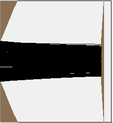
Coloumb, 0.5xSpherical Capacitor Cathode Emitter
In this next example, a sphere of radius 0.01 mm (thermionic cathode emitter) is inside a sphere of radius 1 mm (anode). The current is space-charge limited.
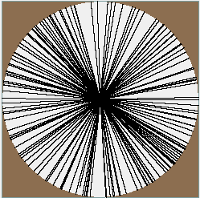
In CPO, these are examples test2d11 and test3d11. CPO can calculate the current, ensuring Child's Law condition is satisfied, under unknown currents and voltages, to under 1% of the theoretical value (8.031 µamp). This is said to be one of the more challenging benchmark simulations, though it's not unlike some common situations.
The SIMION simulation is spherical_diode.iob. Coulombic repulsion is used as beam repulsion will not work here because the trajectories do not follow a plane. Refine to 1E-7 convergence level (higher accuracy may be good for this high aspect ratio geometry), and set Coulombic repulsion with (8.031E-6 A) * (0.01E-6 sec) = 8.031E-14 C. A user program approximates the voltage due to the space-charge on a selected set of points (along radius) during the Fly'm. This displays in the Log window. It is approximately -0.7V on the cathode surface. Now, it is not realistic to merely superimpose this -0.7V space-charge voltage with the electrode voltage (here 0V at the origin), as SIMION does, which would imply that the voltage is -0.7V at the cathode. The cathode is required to be 0V as it is physically connected to GND. What happens in practice is that positive charges from GND move to the cathode surface so that the cathode remains at 0V. Now a -0.7V error is far more than the Child's Law equation can support; the total voltage drop in the system is 1V, or much smaller than that in the cathode region in which Child's Law can be applied (where the equipotential lines are roughly planar).
Potentials along the radius are shown in the below graph from SIMION and CPO. Note that CPO ensures that the Child's Law condition is satisfied in the limit approaching the cathode surface. SIMION's potentials are also only roughly close away from the electrodes.
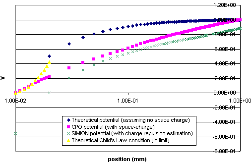
There is a similar cylindrical diode example (cylindrical_diode.iob) that is possibly easier. The theoretical space-charge limited current is 0.013601 mA/mm. The Coulombic repulsion factor entered into SIMION should be 2.72E-15 C since 0.013601E-3 A/mm * (0.04 mm SIMION beam width) * (0.005E-6 µsec SIMION beam duration) = 2.72E-15 C. The calculated space charge voltage at the cathode surface is only about -0.024V. This is about the same magnitude as the voltage drop due to the electrodes 0.002 mm from the cathode surface. Say we measure the voltage due to the electrodes at 0.0058 mm from the cathode surface, where the voltage due to the electrodes is 0.1V and voltage due to the space charge remains at about -0.024V. This distance is about half a cathode radius and so is reasonably close so that the cathode appears roughly planar so that the simple form of Child's Law can be used. This voltage is about four times the magnitude of the calculated space-charge voltage (which is significant but not large). The total voltage here (assuming the voltages can be superimposed, which is very questionable here) is about -0.024V + 0.1V = 0.076V. Note that this voltage is a positive value. Plug this into Child's Law: jmax = 2.3340 µA/mm2 (V)1.5/L2 with V=0.076 V and L=0.0058 mm, gives jmax = 1.45 mA/mm2. Multiplying that by the circumference of the cathode (2 * π * 0.01 mm) gives 0.091 mA / mm compared to the theoretical (0.013601 mA/mm), which is off about an order of magnitude. Now, normally, we don't know a priori what the theoretical space-charge limited current is. We might need to try various currents until we achieve a reasonably self-consistent solution.
As seen, treatment of the space-charge limited current on the cathode via the Coulombic repulsion method might be feasible in SIMION in some cases to an approximation but requires much care and possibly only gives a rough order-of-magnitude estimate.
Summary
This article demonstrated that SIMION's charge repulsion estimation methods can be useful in some circumstances, particularly on the on-set of space-charge (before it becomes too significant) and away from electrodes. Its primary intended purpose is to indicate when space-charge may be significant for those cases when avoiding space-charge situations is desired in designing a system. However, when space-charge is high, such as near electrodes and in low energy regions with high current, such as a thermionic emitter surface that is space-charge limited in current by Child's Law, then the results can be off by an order of magnitude or more the the currents and voltages are quite sensitive to the space-charge. In those cases CPO's space-charge methods are recommended for any type of quantitative result.
Related links
- CPO software, www.simion.com/cpo
- [Wikipedia] Space Charge - Child's Law. http://en.wikipedia.org/wiki/Space_charge
- [Dahl 2000] David A. Dahl. "SIMION for the personal computer in reflection." International Journal of Mass Spectrometry Volume 200, Issues 1-3, 25 December 2000, Pages 3-25 http://dx.doi.org/10.1016/S1387-3806(00)00305-5
- [Appelhans 2005] Anthony D. Appelhans, David A. Dahl. "SIMION ion optics simulations at atmospheric pressure." International Journal of Mass Spectrometry Volume 244, Issue 1, 15 June 2005, Pages 1-14 http://dx.doi.org/10.1016/j.ijms.2005.03.010
- [Read 1999] The charge-tube method for space-charge in beams, by F H Read, A Chalupka and N J Bowring, SPIE Vol 3777, 184-191 (1999).
- D C Weisser, N R Lobanov, P A Huasladen, L K Fifield, H J Wallace, S G Tims and E G Apushkinsky. Novel matching lens and spherical ionizer for a cesium sputter ion source PRAMANA journal of physics. Vol. 59, No. 6, December 2002 http://www.ias.ac.in/pramana/v59/p997/fulltext.pdf
-
"Ion Beams: With Applications to Ion Implantation" by G.R. Brewer, chapter 3, provides
the "Universal Beam Spread Curve" equation, which describes the theoretical shape of a laminar
cylindrical beam of current I, initially accelerated through a voltage V with space-charge
effects neglected, and then passing through a field-free region with space-charge effects
taken into account.
discussion .
The equations, noted by Dan Thomas, and which can be solved numericlaly, are
(partial^2 r)/(partial z^2) = I_0 V^(-3/2) (2^(5/2) PI epsilon_0 sqrt(n))^-1 (1/r) R = r/r_0 Z = I_0 V^(-3/2) (2^(5/2) PI epsilon_0 sqrt(n))^(-1/2) (z/r_0) (partial^2 R)/(partial Z^2) = 1/(2 R)
D. Manura. 2007-07. (c) 2007, Scientific Instrument Services, Inc. Licensed under the terms of SIMION 8.0.